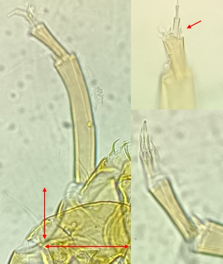
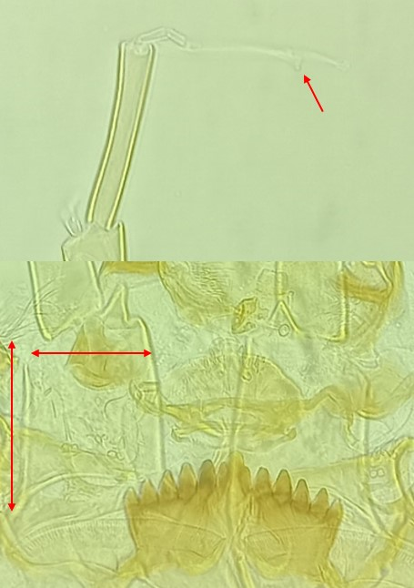

Tribu des Tanytarsini
Plaques ventromentales rapprochées, prémandibules bifides, trois dents internes à la mandibule, pas d'épine ou une petite épine au socle antennaire


Organes de lauterborns petits et opposés à l'apex du deuxieme segment antennaire. Socle antennaire court (plus large que long)
Soies abdominales bifides (difficilement visibles , de petites tailles).
Organes de Lauterborns situés sur de long pédicelles. Socle antennaire plus haut que large avec une épine courte et pointue.
Dent médiane trifide (ou cranté sur le côté)
Attention à la confusion entre Micropsectra, qui a des prémandibules bifides, et Tanytarsus qui à les prémandibules avec 3 dents ou plus. Si celles-ci ne sont pas bien visibles, les griffes des parapodes postérieurs peuvent être utilisée: elles sont environ une centaine chez Micropsectra, tandis qu'elles sont jusqu'à 30 chez Tanytarsus .